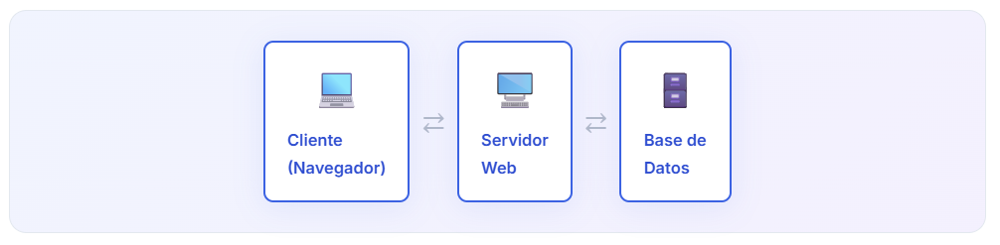
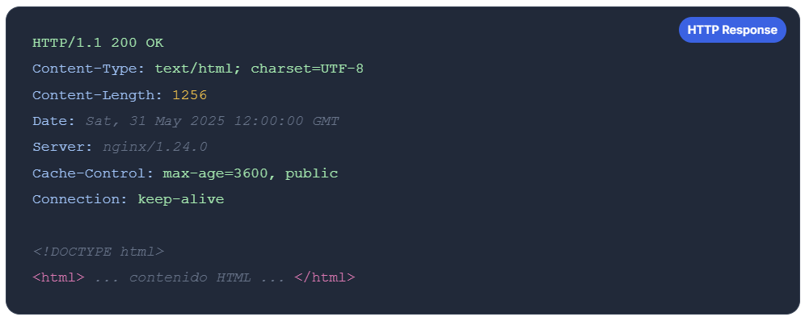

📥 1. Recepción
El servidor escucha el puerto 80 (HTTP) o 443 (HTTPS) y recibe la solicitud del cliente con todos sus encabezados y datos.
🖥️ Procesamiento en el Servidor Web
Cómo el servidor recibe tu solicitud, la procesa y genera una respuesta.
Paso 3 de 5
Un servidor web es una computadora (o conjunto de computadoras) siempre encendida y conectada a Internet que espera solicitudes de clientes —como tu navegador— y las responde enviando los recursos solicitados.
Cuando el servidor recibe tu petición HTTP, realiza tres tareas fundamentales antes de enviarte una respuesta:

📥 1. Recepción
El servidor escucha el puerto 80 (HTTP) o 443 (HTTPS) y recibe la solicitud del cliente con todos sus encabezados y datos.
⚙️ 2. Procesamiento
Analiza el método HTTP, la ruta solicitada, consulta bases de datos si es necesario y ejecuta la lógica de la aplicación.
📤 3. Respuesta
Genera y envía la respuesta HTTP con un código de estado, encabezados informativos y el cuerpo (HTML, JSON, imágenes, etc.).
Cuando el servidor te responde, envía primero una serie de encabezados que describen la respuesta, seguidos del contenido. Así se ve una respuesta exitosa:

El número al inicio de la respuesta (200) es el código de estado. Indica si la solicitud tuvo éxito o falló: 200 = OK · 301 = Redirección permanente · 404 = No encontrado · 500 = Error del servidor.
| Servidor | Descripción | Uso típico |
|---|---|---|
| Apache | El más histórico y usado del mundo. Muy configurable. | Sitios tradicionales, PHP, WordPress. |
| Nginx | Alto rendimiento, ideal para muchas conexiones simultáneas. | Proxy inverso, APIs, sitios de alto tráfico. |
| Node.js | Servidor JavaScript asíncrono, no bloqueante. | APIs REST, aplicaciones en tiempo real. |